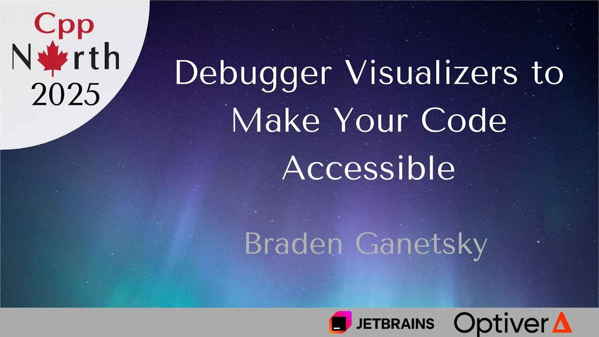
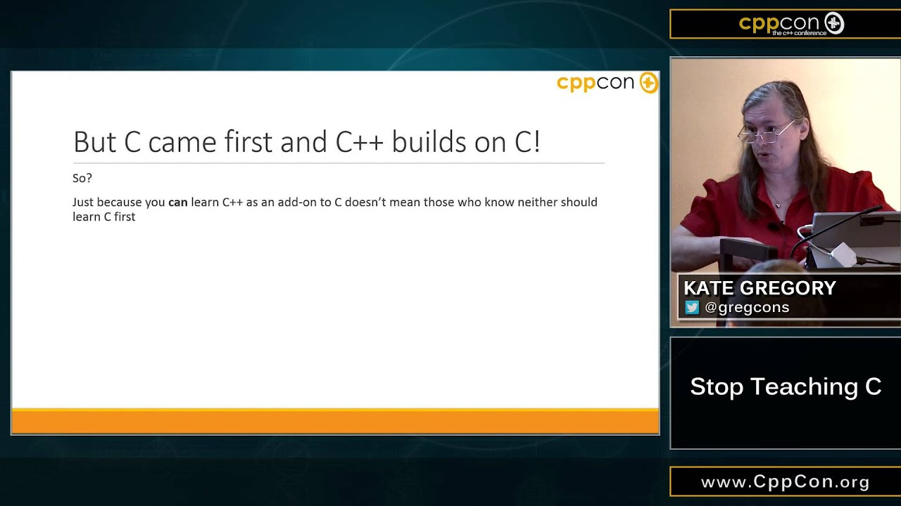

<section my-columns>
    <div>
        
        <br/>
        "Debugger Visualizers to Make Your Code Accessible"
        <br/>
        <a href="https://www.youtube.com/watch?v=nFQ4fLDlbFs" style="font-size: 50%;">https://www.youtube.com/watch?v=nFQ4fLDlbFs</a>
    </div>
</section>

<section my-columns>
    <div>
        
        <br/>
        "Stop Teaching C"
        <br/>
        <a href="https://www.youtube.com/watch?v=YnWhqhNdYyk" style="font-size: 50%;">https://www.youtube.com/watch?v=YnWhqhNdYyk</a>
    </div>
</section>

<include src="./regions/intro.html"></include>

<section data-markdown class="list-fade-in-then-semi-out">
    <textarea data-template>
        ## About me
        * Canadian
        * Work at LSEG
         <!-- .element style="position:absolute; height:45%; right:0; top:5%;"-->
        * Secretary of WG21
        * Facilitator of Winnipeg C++ Developers
        * Licensed professional engineer
    </textarea>
</section>

<section data-markdown class="list-fade-in-then-semi-out">
    <textarea data-template>
        ## In this talk
        * Addressing the "cons" of debuggers
        * Advocating for writing code with tooling and users in mind
        * This is a "tooling" talk, not much C++ directly
        * Questions at any time!
    </textarea>
</section>
